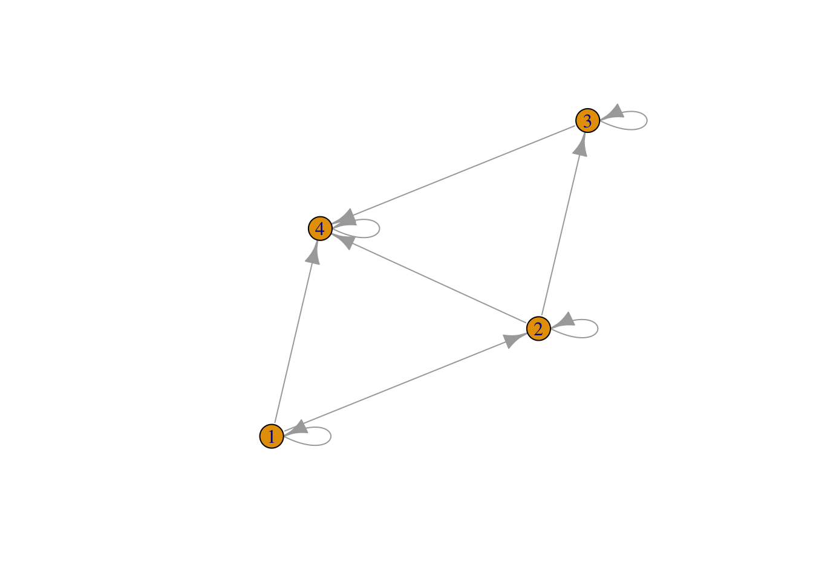

K. A. Garrett, University of Florida
Impact network analysis (INA) is designed to address multiple aspects of linked socioeconomic networks (spread of ideas, money, influence, etc.) and biophysical networks (spread of new varieties, certified seed, pathogens, pests, etc.).
The functions introduced here are part of an R package under development, “INA”. INA is the analysis of how technologies affect regional outcomes, such as productivity or disease incidence, through their effects on linked socioeconomic and biophysical networks (Garrett 2018).
Garrett KA, 2018. Impact network analysis: evaluating the success of interventions. PeerJ Preprints 6, e27037v1 https://doi.org/10.7287/peerj.preprints.v1.
The example given here addresses identifying the best locations in a network for sampling to quickly detect a spreading pathogen (or spreading new variety, for example). A node is better for sampling if the pathogen is likely to be detected at that node before the pathogen has spread very far through the network. For example, an isolated node would be a poor sampling choice because the pathogen could spread widely before it reaches the isolated node.
The functions for this analysis can also take into account information about where the pathogen is more likely to enter the network. For example, nodes with little information available through communication networks may be more likely to be vulnerable to being entry points for pathogens.
An updated version of INApreliminary will be available on GitHub soon, and a complete version with multiple types of scenario analyses will be available later this year.
The examples below include creation of the functions that will later be available as part of INApreliminary.
Consider a simple adjacency matrix, which will be used to illustrate the functions.
library('igraph')
Amat <- matrix(c(1,0,0,0,1,1,0,0,0,1,1,0,1,1,1,1),nrow=4,ncol=4)
Amati <- graph.adjacency(Amat)
plot(Amati)
sAmat <- Amat * 0.7 # each potential link has probability 0.7 of existing - this will sometimes be usefulFor a single selected starting node, the invdetf function yields a vector of the number of nodes invaded for each sampling node by the time invasion reaches (is detected at) that sampling node, and the time step of first invasion at the sampling node - for one simulation.
The following code creates the function invdetf.
invdetf <- function(adjmat, start.choice, stoch=F){
### for all three functions, need to add in the definitions for the input variables...
dimL <- dim(adjmat)[1] # number of rows of adjacency matrix
t1 <- matrix( 0 * 1:dimL, nrow=1)
t1[,start.choice] <- 1 # starting node labelled 1
# if a stochastic model, generate the adjacency matrix for this simulation
# if stochastic, assumes the adjacency matrix is made up of probabilities
if(stoch){ # need to think about the temporal resolution of stochasticity...
adjmat <- (matrix(runif(dimL^2), ncol=dimL) < adjmat)
}
# generate the infection status for each node at each time point until spread stops
outmat <- t1
infcount.pre <- 1
infcount.post <- -9 # perhaps improve structure
while(sum(t1) < dimL & infcount.pre != infcount.post){
infcount.pre <- sum(t1) # perhaps change to infcount.pre <- infcount.post
t1 <- as.numeric(t1 %*% adjmat > 0)
infcount.post <- sum(t1)
outmat <- rbind(outmat,t1) # row i is the ith time point
}
# find the num infected for each single sampling node,
# assuming infected node stays infected...
# consider whether to set diag...
# find the number of nodes infected at each time
inft <- rowSums(outmat)
# find the first time each node is invaded, and number of nodes infected at that time
firstt <- -99 + 0*1:dimL # first time each node is invaded
numt <- firstt # number of nodes infected at that time
for (i in 1:dimL){ # col i is the ith sample node
if (sum(outmat[,i] > 0)){ # if node i ever gets infected
firstt[i] <- min(which(outmat[,i] > 0)) # first time
numt[i] <- inft[firstt[i]] # how many nodes at that time
}
else {
firstt[i] <- Inf
numt[i] <- max(inft)
}
}
# for each node, time first invaded and number of nodes infected at that time
sampnode <- cbind(firstt, numt)
list(outmat=outmat, sampnode=sampnode)
}The output is two matrices. The first matrix gives the infection status for each node (column) at each time point (row) until there is no further spread. The second matrix gives, for each node (row), the time until infection (column 1) and the number of nodes infected when at that time (column 2).
invdetf(adjmat=Amat, start.choice=2) # in this case, the second node was selected as the starting point## $outmat
## [,1] [,2] [,3] [,4]
## 0 1 0 0
## t1 0 1 1 1
## t1 0 1 1 1
##
## $sampnode
## firstt numt
## [1,] Inf 3
## [2,] 1 1
## [3,] 2 3
## [4,] 2 3invdetf(adjmat=sAmat, start.choice=2,stoch=T) # stochastic version## $outmat
## [,1] [,2] [,3] [,4]
## 0 1 0 0
## t1 0 0 1 1
## t1 0 0 1 1
##
## $sampnode
## firstt numt
## [1,] Inf 2
## [2,] 1 1
## [3,] 2 2
## [4,] 2 2The function allstartf summarizes this analysis across all potential starting points. The following code creates allstartf.
allstartf <- function(adjmat2, stoch2=F){
dimL <- dim(adjmat2)[1]
alloutmat <- matrix(-99, ncol=dimL, nrow=dimL)
for (i in 1:dimL) {
alloutmat[i,] <- invdetf(adjmat=adjmat2, start.choice=i, stoch=stoch2)$sampnode[,2]
}
alloutmat
}The output is a matrix with entries being the number of nodes infected by the time an invasion is detected at each potential sampling node. Rows in this matrix are potential introduction nodes and columns are potential sampling nodes. For the stochastic case, the result is based on only one simulation (at this point in the analysis).
Note that the diagonal contains ones, because when a node is both the starting point and the sampling point, the epidemic will only have reached one node before detection.
allstartf(adjmat2=Amat)## [,1] [,2] [,3] [,4]
## [1,] 1 3 4 3
## [2,] 3 1 3 3
## [3,] 2 2 1 2
## [4,] 1 1 1 1allstartf(adjmat2=sAmat, stoch2=T)## [,1] [,2] [,3] [,4]
## [1,] 1 3 4 3
## [2,] 1 1 1 1
## [3,] 1 1 1 1
## [4,] 1 1 1 1The function multisimf performs the same analysis, for the specified number of simulations.
multisimf <- function(adjmat3, stoch3=F, nsim=1) {
dimL <- dim(adjmat3)[1]
outarr <- array(-99, c(dimL,dimL,nsim)) # all results
meanarr <- matrix(-99, ncol=dimL, nrow=dimL) # mean of results
vararr <- meanarr # variance of results
for (i3 in 1:nsim){
tempout <- allstartf(adjmat2=adjmat3,stoch2=stoch3)
outarr[,,i3] <- tempout
}
for (i3 in 1:dimL) {
for (i4 in 1:dimL) {
meanarr[i3,i4] <- mean(outarr[i3,i4,])
vararr[i3,i4] <- var(outarr[i3,i4,])
} }
# consider potential use of apply to replace the second loop
list(outarr=outarr, meanarr=meanarr, vararr=vararr)
}The first component of the output from multisimf is the response for each simulation - nsim outputs from allstartf (in this example, 10 simulations). The next component of the output is the mean across the simulations. The final component is the variance across simulations.
Because columns represent potential sampling nodes, the mean of a column (in the second component of the output) is the mean number of nodes invaded by the time the invasion would be detected at that node. The mean of the variance in a column (in the third component of the output) indicates how consistently the mean number of nodes would have been invaded.
(AN OPTION NOT TO SHOW ALL SIMULATION RESULTS WILL BE INCLUDED)
multisimf(adjmat3=sAmat, stoch=T, nsim=10)## $outarr
## , , 1
##
## [,1] [,2] [,3] [,4]
## [1,] 1 1 1 1
## [2,] 3 1 3 3
## [3,] 2 2 1 2
## [4,] 1 1 1 1
##
## , , 2
##
## [,1] [,2] [,3] [,4]
## [1,] 1 2 4 4
## [2,] 1 1 1 1
## [3,] 1 1 1 1
## [4,] 1 1 1 1
##
## , , 3
##
## [,1] [,2] [,3] [,4]
## [1,] 1 1 1 1
## [2,] 3 1 3 3
## [3,] 1 1 1 1
## [4,] 1 1 1 1
##
## , , 4
##
## [,1] [,2] [,3] [,4]
## [1,] 1 2 2 2
## [2,] 2 1 2 2
## [3,] 1 1 1 1
## [4,] 1 1 1 1
##
## , , 5
##
## [,1] [,2] [,3] [,4]
## [1,] 1 2 2 2
## [2,] 1 1 1 1
## [3,] 2 2 1 2
## [4,] 1 1 1 1
##
## , , 6
##
## [,1] [,2] [,3] [,4]
## [1,] 1 1 1 1
## [2,] 2 1 2 2
## [3,] 1 1 1 1
## [4,] 1 1 1 1
##
## , , 7
##
## [,1] [,2] [,3] [,4]
## [1,] 1 3 4 3
## [2,] 3 1 3 3
## [3,] 1 1 1 1
## [4,] 1 1 1 1
##
## , , 8
##
## [,1] [,2] [,3] [,4]
## [1,] 1 3 4 3
## [2,] 3 1 3 3
## [3,] 2 2 1 2
## [4,] 1 1 1 1
##
## , , 9
##
## [,1] [,2] [,3] [,4]
## [1,] 1 2 4 4
## [2,] 2 1 2 2
## [3,] 1 1 1 1
## [4,] 1 1 1 1
##
## , , 10
##
## [,1] [,2] [,3] [,4]
## [1,] 1 2 2 2
## [2,] 3 1 3 3
## [3,] 2 2 1 2
## [4,] 1 1 1 1
##
##
## $meanarr
## [,1] [,2] [,3] [,4]
## [1,] 1.0 1.9 2.5 2.3
## [2,] 2.3 1.0 2.3 2.3
## [3,] 1.4 1.4 1.0 1.4
## [4,] 1.0 1.0 1.0 1.0
##
## $vararr
## [,1] [,2] [,3] [,4]
## [1,] 0.0000000 0.5444444 1.8333333 1.3444444
## [2,] 0.6777778 0.0000000 0.6777778 0.6777778
## [3,] 0.2666667 0.2666667 0.0000000 0.2666667
## [4,] 0.0000000 0.0000000 0.0000000 0.0000000The calculations of means up to this point have been based on the assumption that each node is equally likely to be the starting node. (Alternative functions, under preparation, do include the option for nodes to have different probabilities of invasive establishment - with suffix wt)
The function wtsimf uses output from multisimf to evaluate the mean number of nodes reached when invasion would be detected at each potential sampling node, where potential starting nodes may have different probabilities of functioning as starting nodes. For example, higher risk of being the starting node might result from a node’s role as a port, or weather conditions associated with a node.
wtsimf <- function(msf.out, adjmat5, wtvec, nodenam=NA) {
dimL <- dim(adjmat5)[1]
matop <- msf.out$meanarr
wtarr <- wtvec * matop
# find failure rate for each sampling node
sampfail <- colSums(wtarr)
tsampfail <- data.frame(1:dimL, sampfail, nodenam)
list(wtarr=wtarr, tsampfail=tsampfail)
}This gives the failure rate. Sometimes a more useful summary might be expressing this in terms of success rates, in the sense of the number of nodes that are not infected when the pathogen is detected by a sampling node.
Suppose the weights indicating the probability that each of four nodes is the introduction node are as follows.
wtvec.ex <- c(0.001,0.2,0.798,0.001) # weights indicating the relative likelihood that each of four nodes is the introduction node for an invasion
msf.outex <- multisimf(adjmat3=sAmat, stoch=T, nsim=10)
wtsimf(msf.out=msf.outex, adjmat5=sAmat, wtvec=wtvec.ex)## $wtarr
## [,1] [,2] [,3] [,4]
## [1,] 0.0010 0.0023 0.0028 0.0023
## [2,] 0.3800 0.2000 0.3800 0.3800
## [3,] 1.0374 1.0374 0.7980 1.0374
## [4,] 0.0010 0.0010 0.0010 0.0010
##
## $tsampfail
## X1.dimL sampfail nodenam
## 1 1 1.4194 NA
## 2 2 1.2407 NA
## 3 3 1.1818 NA
## 4 4 1.4207 NAwtsimf(msf.out=msf.outex, adjmat5=sAmat, wtvec=wtvec.ex, nodenam=c("KS","NE","ND","SD"))## $wtarr
## [,1] [,2] [,3] [,4]
## [1,] 0.0010 0.0023 0.0028 0.0023
## [2,] 0.3800 0.2000 0.3800 0.3800
## [3,] 1.0374 1.0374 0.7980 1.0374
## [4,] 0.0010 0.0010 0.0010 0.0010
##
## $tsampfail
## X1.dimL sampfail nodenam
## 1 1 1.4194 KS
## 2 2 1.2407 NE
## 3 3 1.1818 ND
## 4 4 1.4207 SDUsing the weights based on the number of information sources, or the quality of information sources, is one way to integrate the socioeconomic network and the biophysical network, with an egocentric network focus. There are many other possibilities for linking the two networks, potentially drawing on more information about the network of information communication. An example of this analysis applied to potential spread of disease through a seed system is available in
Buddenhagen, C. E., J. F. Hernandez Nopsa, K. F. Andersen, J. Andrade-Piedra, G. A. Forbes, P. Kromann, S. Thomas-Sharma, P. Useche, and K. A. Garrett. 2017. Epidemic network analysis for mitigation of invasive pathogens in seed systems: Potato in Ecuador. Phytopathology 107:1209-1218.
Andersen KF, Buddenhagen CE, Rachkara P, Gibson R, Kalule S, Phillips D, Garrett KA, 2018. Modeling epidemics in seed systems and landscapes to guide management strategies: The case of sweetpotato in Northern Uganda. Phytopathology, https://doi.org/10.1094/PHYTO-03-18-0072-R